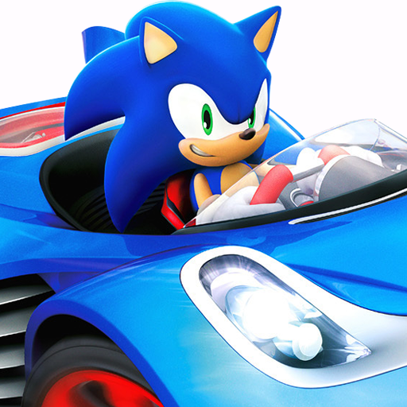

 Sonic & Sega All-Stars Racing: Transformed
Details
 |
|
| Playtime | Not Played |
| Last Activity | Never |
| Added | 4/29/2025 4:54:57 |
| Modified | 5/7/2025 4:33:29 |
| Completion Status | Not Played |
| Library | Playnite |
| Source | |
| Platform | Sony PlayStation 3 |
| Release Date | 11/16/2012 |
| Community Score | 90 |
| Critic Score | 76 |
| User Score | |
| Genre | Racing |
| Developer | Sumo Digital |
| Publisher | SEGA |
| Feature | Multiplayer Single Player |
| Links | PCGamingWiki |
| Tag | [People] artist: Andy Ritson [People] composer: Richard Jacques [People] designer: Gareth Wilson [People] director: Steven Zalud |
Description
Sonic & All-Stars Racing Transformed is a kart racing game developed by Sumo Digital and published by Sega. It was released for the PlayStation 3, Xbox 360, and Wii U in November 2012; for PlayStation Vita in December 2012; for Windows in January 2013; for Nintendo 3DS in February 2013; and for Android and iOS devices in January 2014. The PS3 and Wii U versions of the game were released in Japan on May 15, 2014.
Sonic & All-Stars Racing Transformed is the sequel to Sonic & Sega All-Stars Racing, and the fourth installment in the Sega All-Stars series. The game was a launch title for the Wii U in North America and Europe. Sonic & All-Stars Racing Transformed received positive reviews from critics, with many praising the character roster and major improvements from its predecessor. It received a nomination for "Best Racing Game of 2012" from GameTrailers, and was nominated for a Golden Joystick Award in 2013 for the "Best Multiplayer" category, losing to Payday 2. Sumo Digital developed a third racing game in the Sonic series, Team Sonic Racing. The vehicle transformation mechanic featured in Sonic & All-Stars Racing Transformed appears in the upcoming Sonic Racing: CrossWorlds.
Gameplay
Sonic & All-Stars Racing Transformed is a kart racing game in which players race against each other using over 20 characters from various Sega franchises, such as Sonic the Hedgehog, Jet Set Radio and Space Channel 5. It features new mechanics and improvements from the previous game. At certain points in a race, vehicles can alternate between car, boat and plane modes. The car mode handles similarly to the previous game, in which players can earn boost by drifting around corners or performing tricks whilst in the air. Boat mode features boating physics, requiring players to consider their vehicle's turbulence. They may be affected by waves made in the water, some of which can be used to leap into the air and perform stunts. Plane mode, the fastest of the three forms, gives players the freedom to move both vertically and horizontally. Like the other modes, players can 'air-drift' around corners to earn boost and can perform rolls to quickly adjust their position, earning boost for narrowly dodging obstacles. Players alternate between these modes by driving through blue transformation gates. Certain tracks in the game terraform as players proceed through them, offering different playstyles between each lap.
Several varieties of weapons have been added, including explosive hot rod engines, freezing snowballs, blowfish, and swarms of wasps that appear at the front of the pack. In the Japanese version, the blowfish are replaced with garbage Puyos from the Puyo Puyo series. All-Star Moves return, though these are awarded slightly differently, and can be used in online multiplayer. During races, players can collect star tokens, found scattered around the course or earned by attacking opponents, which can be spent in a slot machine between events to earn random bonuses, such as enhanced items or faster recovery from certain weapons.
The main campaign is the Career Mode which, along with returning features such as Grand Prix, Time Attack and Single Race, mainly revolves around the World Tour mode. This mode involves going through a branching series of events, ranging from standard races to various challenges, including earning time by drifting, maneuvering through traffic or fighting against large tanks. Completing these challenges on various difficulties earn stars which are used to open up new branches and unlock new characters and mods. Racing with each character in any mode earns XP which unlock modifications that alter the stats of each vehicle. The game features 16 new tracks inspired by games like Nights into Dreams, Super Monkey Ball, Panzer Dragoon, Golden Axe, After Burner and Burning Rangers, as well as four returning locations from the first game and mirror versions of each track. The game features online multiplayer on all versions and four player split-screen multiplayer for the consoles. Some of the career modes can be played in split-screen multiplayer. The Wii U version features unique minigames and features that utilize the Wii U GamePad and can support up to five players via split-screen.
Playable characters
Sonic & All-Stars Racing Transformed features 24 characters in all major versions of the game, including one downloadable content character. The Wii U, Nintendo 3DS and Xbox 360 versions each received one additional playable character based on their respective console's avatar systems, while the Windows version received seven additional playable characters, including two released as downloadable content. In the mobile version of the game, titled Sonic Racing Transformed, there were only 15 playable characters, four of which could only be unlocked through in-app purchases.
- AGES
- AiAi
- Alex Kidd
- Amigo
- Amy
- Avatar
- B.D. Joe
- Beat
- Danica Patrick
- Dr. Eggman
- Football Manager
- General Winter
- Gilius
- Gum
- Joe Musashi
- Knuckles
- MeeMee
- Metal Sonic
- Mii
- NiGHTS
- Pudding
- Ralph
- Reala
- Ryo
- Shadow
- Shogun
- Sonic
- Tails
- Team Fortress
- Ulala
- Vyse
- Willemus
- Yogscast
Development and release
The game's development staff contains members of Bizarre Creations, developer of Blur, Metropolis Street Racer, and the Project Gotham Racing series of racing video games, and of Black Rock Studio, developer of Split Second: Velocity and Pure. The console and PlayStation Vita versions run on a new internal engine, codenamed "Sumo", at 30 fps, while the 3DS version was built from the ground up. Longtime Sega music composer Richard Jacques handled the game's soundtrack, which features both original tracks and remixed Sega tunes. The development team cites Wave Race and Hydro Thunder as their inspirations for the water-based racing segments. At E3 2012, it was announced that JR Motorsports NASCAR Nationwide Series driver Danica Patrick would be appearing as a playable guest character in the game. She drives the "Danicar", a vehicle co-designed by Patrick for Mattel's Hot Wheels toy line. A car that was shown as a promotion during E3 2012 (pictured on the right) was also raced by Patrick during the O'Reilly Auto Parts Challenge in Texas Motor Speedway on November 7, 2012, about a week before release. The game features Ralph from the animated Disney film Wreck-It Ralph, in which Sonic, Dr. Eggman, and other Sega characters make cameo appearances. Ristar makes a cameo appearance as the game's flagman. The Xbox 360 version features playable Avatars, while the Wii U and Nintendo 3DS versions include playable Miis. A Bonus Edition of the game was available for pre-order or to get after release as long as it was available, which included Metal Sonic as a playable character, OutRun Bay, and additional stickers for the player's license. A port of the game for Windows was released in January 2013 and featured additional exclusive characters, including characters from Valve's Team Fortress 2.
In response to fans requesting additional characters as downloadable content, game director Steve Lycett posted on Sega's official forums, challenging them to organize a vote to nominate characters for him to recommend to Sega. Seven characters were chosen for recommendation, including Ryo Hazuki, Hatsune Miku, Segata Sanshiro, Vectorman, ToeJam & Earl, Bayonetta, and Ristar. On January 24, 2013, Lycett confirmed that one of those characters had been approved for development, later revealed to be Ryo Hazuki. An additional character, General Winter from Company of Heroes 2, was released as part of a free update for the PC version on July 4, 2013. On August 5, 2013, Willemus from Total War: Rome II was added to the PC version as a free update. As part of a collaboration with The Yogscast and Humble Bundle, Yogscast's Simon Lane was released as a downloadable character for the PC version on December 6, 2013, with all proceeds going to charity. A stream by The Yogscast previewing the character showed Ryo Hazuki from the Shenmue series, who had not yet been announced for inclusion. On January 14, 2014, Ryo became available for purchase as a DLC on Steam for the PC version. Due to technical issues, the Android and iOS versions were taken down soon after their release.
On October 4, 2016, the Xbox 360 version was added to the list of backward-compatible games for the Xbox One, and later extended to the Xbox Series X/S. The game later received an update on November 15, 2021 to increase the target frame rate to 60 frames per second on the Xbox Series X/S.
Reception
The game has received positive reviews from critics. It holds a Metacritic rating of 82 for the Xbox 360 and PlayStation 3 versions, 78 for the Wii U version, and 79 for the PC version. IGN gave the game a score of 8.6, calling it "a bright, handsome and thoroughly enjoyable ride." Destructoid gave the game 8/10, saying "Sega has cherry-picked the best elements of kart racers and applied it to the best arcade racing games to create a sleeper hit that’s great fan service and great fun." GameTrailers gave the game a score of 8.7. Empire stated that "Sonic's second turn behind the wheel is a surprisingly complex offering, a kart racer that provides both an immediate surface appeal to newcomers and enough 'fair frustration' to maintain the interests of seasoned race gamers chasing that perfect result," giving the game 4/5 stars.
GameSpot writer Britton Peele gave positive reviews to the Xbox 360 and PlayStation 3 versions of the game, but gave a more mixed review to the Wii U version. While Peele described the title as "far from a poor man's Mario Kart", the Wii U version received a day-one patch that appeared to render the game's Boost Race levels unwinnable. Peele also said the Wii U version's online Battle mode levels were also broken, with characters spawning in mid-air and collectable items for one of the version's exclusive modes not appearing at all. Sumo Digital has since released a patch to address the respective issues. 1Up.com gave the game an A− stating: "But even if the game doesn't have a Daytona car driving a Sega Rally car (still my ultimate fantasy), it doesn't change the fact that Transformed is a largely improved sequel over its predecessor, and that one wasn't so bad to begin with. The old Sega is still in the new Sega, and that's a fun thought."
As of March 2013, the game has sold 1.36 million copies worldwide.